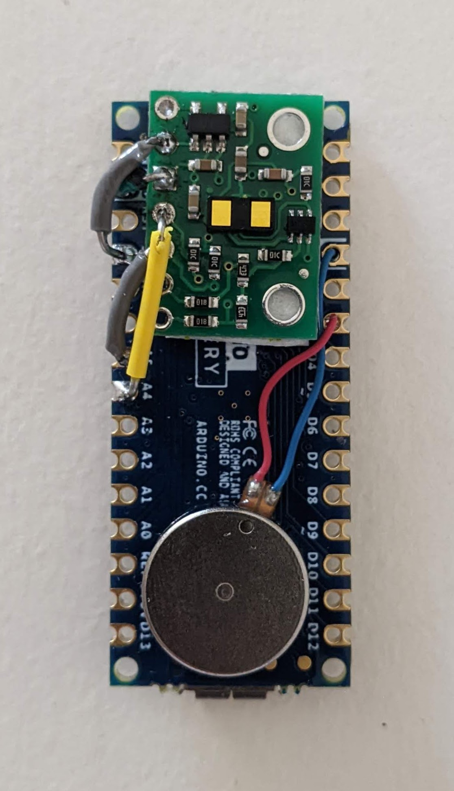
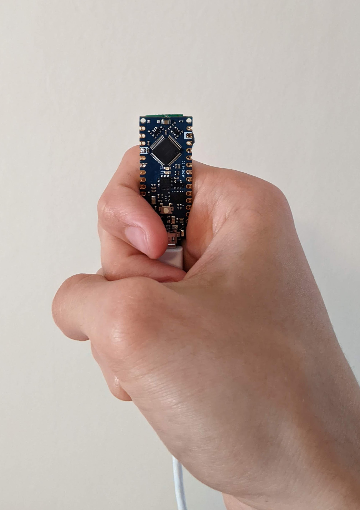
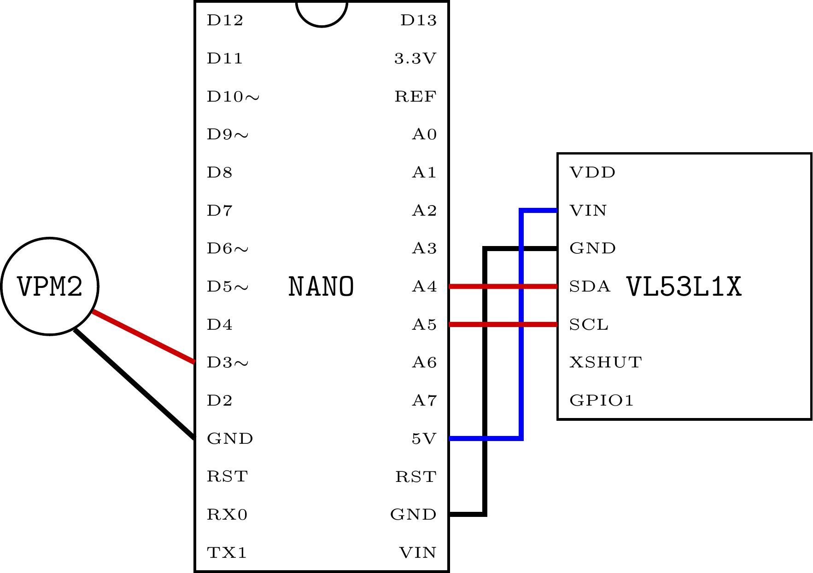

Un détecteur d'obstacles pour malvoyants ________________________________________________________________________________ Projet réalisé lors du TIPE. * Contexte ............................................................... [001] * Présentation du produit fini ........................................... [002] * Fabrication ............................................................ [003] * Achat des composants ............................................... [004] * Soudure ............................................................ [005] * Installation du logiciel sur le microcontrôleur .................... [006] * Liens .................................................................. [007] [001] Contexte ________________________________________________________________________________ Avec plusieurs dizaines de millions de personnes touchées selon l'Organisation Mondiale de la Santé [1], et potentiellement trois fois plus d'ici 2050 selon le journal médical The Lancet [2], la cécité est une problématique majeure de santé publique. Les conséquences des déficiences visuelles sont lourdes et nombreuses, par exemple dans la mobilité. Les solutions les plus communes, comme la canne blanche ou les chiens-guides, présentent toutes des problèmes : la canne a une portée limitée, le chien-guide nécessite une logistique plus importante. De plus, ces solutions ne permettent pas de détecter certains obstacles, notamment ceux situés en hauteur (au dessus du bassin). Pour répondre à ces problématiques, des entreprises commercialisent des cannes électroniques permettant aux déficients visuels de détecter les obstacles les plus proches. On peut citer CECIAA, Visioptronic ou GoSense, avec respectivement l'Ultracane [3], Tom Pouce [4] et Rango. La perception de l'environnement proche est effectuée par des capteurs de distance, dont la portée dépasse dix mètres pour Tom Pouce. Les informations sont ensuite communiquées à l'utilisateur par le biais de vibrations. Cependant, ces solutions sont très peu démocratisées car très onéreuses (environ 1000 euros pour l'Utracane et 5000 euros pour Tom Pouce) et complexes à prendre en main : pour Tom Pouce, une formation de 30 heures semble nécessaire, pour des résultats partiellement convaincants [5]. De plus, les cannes sont visuellement discriminantes. L'objectif de ce projet est de proposer une alternative open-source, abordable économiquement et réalisable sans connaissances techniques préalables. [002] Présentation du produit fini ________________________________________________________________________________ Le produit fonctionne de la façon suivante: un capteur détermine la distance de l'obstacle le plus proche, puis l'information est communiquée à l'utilisateur par un vibreur. Les vibrations sont d'autant plus fortes que l'obstacle est proche, et s'arrêtent pour un obstacle situé à plus de 2 mètres de distance. Le faisceau de détection est volontairement très directif : l'idée est de balayer l'environnement avec des petits mouvements de la main. Le dispositif s'allume dès lors qu'il est branché (port micro-USB), par exemple à une batterie externe. L'externalisation de la source d'énergie permet un produit fini compact et maniable, et offre de la flexibilité à l'utilisateur, qui peut s'équiper de batteries adaptées à son usage. Le coût total du produit est inférieur à 40 euros, frais de port exclus. Sa fabrication nécessite un matériel générique, disponible dans des ateliers partagés, ou à l'achat (pour moins de 30 euros). [003] Fabrication ________________________________________________________________________________ Certaines étapes de ce tutoriel ne sont pas détaillées : des tutoriels associés se trouvent facilement en ligne. --[004] Achat des composants --------------------------------------------------- Composants nécessaires : * Microcontrôleur : Arduino Nano Every (8,80 € chez Arduino, non brochée) * Capteur de distance : VL53L1X (19,40 € chez Gotronic) * Vibreur : VPM2 (4,20 € chez Gotronic) * Des ponts de connexion (6,80 € chez Gotronic) * Scotch double face (idéalement de quelques milimètres d'épaiseur) Matériel nécessaire, si l'accès à un atelier partagé n'est pas possible : * Station de soudage (17,90 € chez Gotronic) * Pompe à dessouder (3,50 € chez Gotronic) * Fil de soudure (8,30 € chez Gotronic) --[005] Soudure ---------------------------------------------------------------- 1. Identifier les pins du vibreur et du microcontrôleur 2. Scotcher le capteur de distance sur le dos du microcontrôleur (voir photo) 3. Réaliser les connexions entre le capteur de distance et le microcontrôleur à l'aide des ponts de connexions (se référer au schéma de soudure ci-dessous) 4. Scotcher le vibreur sur le dos du microcontrôleur (voir photo) 5. Réaliser les connexions entre le vibreur et le microcontrôleur (se référer au schéma de soudure ci-dessous)--[006] Installation du logiciel sur le microcontrôleur ------------------------ 1. Télécharger le code pour le microcontrôleur, disponible sur github.com 2. Installer puis lancer Arduino IDE 3. Installer le driver pour l'Arduino Nano Every 4. Sélectionner la carte et le port adéquat 5. Téleverser le code sur le microcontrôleur Le produit devrait à présent fonctionner. Il suffit de le brancher à une source d'alimentation, par exemple une batterie externe ou un ordinateur. [007] Liens ________________________________________________________________________________ * Page de présentation du projet : jacquin.xyz * Support de présentation du TIPE : jacquin.xyz * Ensemble des ressources disponibles : github.com * Contact : arthur@jacquin.xyz ________________________________________________________________________________ [1] ORGANISATION MONDIALE DE LA SANTÉ (OMS) : Cécité et déficience visuelle : who.int [2] RUPERT R.A. BOURNE AND AL. ON BEHALF OF THE VISION LOSS EXPERT GROUP : Magnitude, temporal trends, and projections of the global prevalence of blindness and distance and near vision impairment: a systematic review and meta-analysis : The Lancet Global Health, Volume 5, Issue 9 (2017), e888 - e897 [3] CECIAA SAS : Canne blanche électronique : ceciaa.com [4] FONDATION VISIO : Cannes blanches électroniques pour personnes aveugles ou malvoyantes : visioptronic.fr [5] RENÉ FARCY, ROGER LEROUX, ALAIN JUCHA, ROLAND DAMASCHINI, COLETTE GRÉGOIRE AND AZIZ ZOGAGHI : Electronic travel aids and electronic orientation aids for blind people: technical, rehabilitation and everyday life points of view : Proceedings of the Conference and Workshop on Assistive Technology for People with Vision and Hearing Impairment (CVHI), 2006 [6] DAVID ABREU, JONAY TOLEDO, BENITO CODINA AND ARMINDA SUÁREZ : Low-Cost Ultrasonic Range Improvements for an Assistive Device : Sensors, Volume 21, Issue 12 (2021), 4250
{kind=link}
{kind=link}